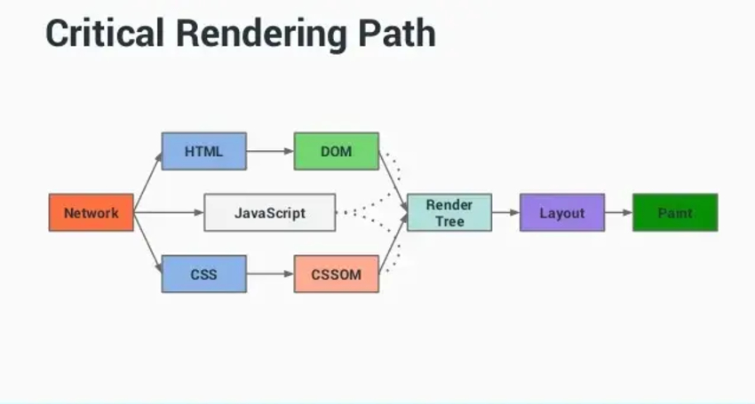

The Elements of Browsers Rendering
This article explains how browsers parse HTML, CSS, and render web pages step by step.
When a browser loads a web page, it first parses the HTML to build the Document Object Model (DOM), which represents the page’s structure. At the same time, CSS is processed to create the CSS Object Model (CSSOM), defining the styling of each element.
The DOM and CSSOM are combined to form the Render Tree, which determines how elements are visually displayed on the screen. The browser then calculates the layout, deciding the exact position and size of each element.
Finally, the browser paints pixels to display the content. JavaScript can modify the DOM dynamically, affecting rendering. Understanding these elements helps developers optimize performance, improve load times, and create smoother user experiences.